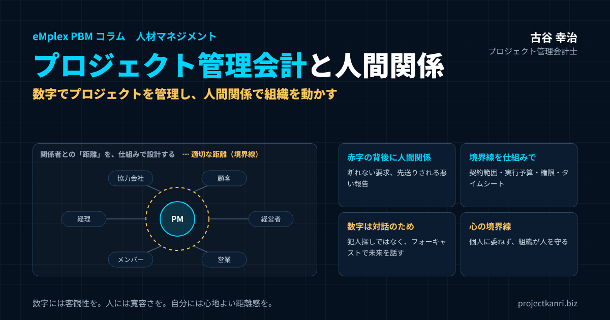

プロジェクト管理会計と人間関係―数字でプロジェクトを管理し、人間関係で組織を動かす。赤字の背後にある人の問題と「適切な距離」の設計

結論：数字でプロジェクトを管理し、人間関係で組織を動かす
この記事の要点
- 数字の悪化の背後に人間関係：断れない追加要求、先送りされる悪い報告、抱え込まれる問題
- 良くするより「距離」を設計：境界線を感情ではなく、契約・予算・権限・タイムシートの仕組みで引く
- 数字は対話のため：犯人探しではなく、フォーキャストで「これからどうするか」を話す
- PMの心の境界線と組織の責任：個人の努力だけに委ねず、組織が人を守る
- 人と数字の橋渡し：スーパーアドミニストレーターが感情の対立を客観的な課題に置き換える
プロジェクト管理会計士の古谷です。今回は、これまでのコラムとは少し趣を変えて、プロジェクト管理会計と人間関係について考えてみたいと思います。
プロジェクト管理会計というと、予算、原価、粗利、着地見込みといった数字の話だと思われがちです。もちろん、数字は大切です。しかし、私が200社を超える企業のプロジェクト管理会計に関わってきて感じるのは、数字の悪化の背後には、しばしば人間関係の問題が存在するということです。そして、数字の管理がうまくいっている会社では、人と人との関係の持ち方にも、ある共通点があります。
結論から申し上げます。プロジェクトは数字で管理し、組織は人間関係で動かす。そして、優れたプロジェクト管理会計とは、数字を管理する仕組みであると同時に、人と人との適切な距離を設計する仕組みでもあります。
人間関係を良くすることと、プロジェクトを成功させることは、同じではありません。すべての関係者と仲良くしようとすれば、かえって採算も、人の健康も守れなくなります。必要なのは、関係を悪くすることではなく、適切な境界線を設けること。そして、その境界線を、感情ではなく仕組みで引くことです。ここに、プロジェクト管理会計の重要な役割があります。
本稿では、プロジェクトの問題がなぜ人間関係から始まるのか、境界線をどのように仕組みとして設計するのか、数字を人を責めるためではなく対話のために使うにはどうすればよいのか、プロジェクトマネージャーが自分を守るための心の境界線とは何か、そしてAIの時代に組織の健全性をどう考えるのかを、順を追ってお伝えします。
きっかけ：「人間関係との距離を調整する能力」という視点
このテーマを考えるきっかけになったのは、2026年10月7日にPRESIDENT Onlineに掲載された、産業医の武神健之氏の記事です。記事のテーマは、職場の人間関係が良好でなくても、心身の健康を保ちながら働き続ける人の共通点でした。
印象的だったのは、そうした人たちは、必ずしも人間関係を改善することに長けているわけではなく、むしろ人間関係との距離を調整する能力に優れている、という指摘です。武神氏は、その能力を「切り替える能力」と「回復力」という二つの側面から説明しています。職場を自分の人生のすべてにしないこと、自分の幸福を会社に預けないことが、長く健やかに働き続けるための鍵だという趣旨です。
この考え方は、私が長年取り組んできたプロジェクト管理会計にも通じるものがあると感じました。プロジェクトの現場では、多くの人が、さまざまな立場と期待を抱えて関わります。その中で、人間関係を「良くする」ことだけを目指すと、無理が生じます。大切なのは、関係との「距離」を適切に保つこと。そして、その距離を、個人の努力だけに頼るのではなく、組織の仕組みとして設計することです。
以下では、この「距離」という視点から、プロジェクト管理会計と人間関係の関係を考えていきます。
もちろん、プロジェクトの現場には、職場の人間関係とはまた違う難しさがあります。顧客や協力会社といった社外の関係者が多く、立場や利害も複雑です。だからこそ、個人の心がけだけでなく、仕組みとしての距離の設計が、より重要になるのだと私は考えています。
参考：武神健之「「いつでも辞められる」と思える人ほど長く働ける…苦手な同僚がいても心を壊さない人の「うまい距離の取り方」」（PRESIDENT Online、2026年10月7日）https://president.jp/articles/-/119761
プロジェクトの問題は、数字よりも人間関係から始まる
プロジェクトが赤字になる原因は何でしょうか。見積りの甘さ、工数の超過、仕様の変更、外注費の増加、納期の遅延。会計の観点からは、さまざまな要因が考えられます。
しかし、その一つひとつをさかのぼっていくと、多くの場合、人の判断と行動に行き着きます。そして、その判断と行動の背後には、人間関係が存在しています。
| 数字に現れる問題 | 背後にある人の判断・行動 | その背景にある人間関係 |
|---|---|---|
| 追加作業による原価超過 | 範囲外の要求を無償で受ける | 顧客との関係を壊したくない |
| 赤字の発覚が遅い | 原価超過の報告を先送りする | 上司に悪い報告をしたくない |
| 工数の急増・品質問題 | メンバーが問題を一人で抱え込む | 評価を恐れる、相談しにくい |
| 外注費の増加・納期遅延 | 協力会社が遅れを言い出せない | 発注元との力関係 |
| 見積りの甘さ | 受注を優先して楽観的に見積る | 営業目標へのプレッシャー |
営業担当者は、顧客との関係を壊したくないために、追加の要求を断れません。プロジェクトマネージャーは、上司に悪い報告をしたくないために、原価の超過を先送りします。メンバーは、評価を恐れて、問題を一人で抱え込みます。外注先は、発注元との関係を気にして、遅れを言い出せません。
一つひとつは、悪意から生まれる行動ではありません。むしろ、関係を大切にしたい、迷惑をかけたくない、期待に応えたいという、善意に近い気持ちから生まれることが多いのです。しかし、その結果、問題が表面化したときには、すでに赤字が拡大しています。
つまり、プロジェクトの損益は数字として現れますが、その数字を生み出しているのは、人間の判断と行動なのです。数字だけを見て、数字だけを直そうとしても、根本の原因である人の判断と行動、そしてその背後にある人間関係に目を向けなければ、同じ問題は繰り返されます。
私がプロジェクト管理会計の支援に入るとき、最初に数字を見るのはもちろんですが、同時に、その数字がどのような会話の中で生まれ、どのような会話の中で扱われているのかにも注意を払います。誰が、誰に、どのタイミングで、何を報告しているのか。報告を受けた人は、どのように反応しているのか。そこに、数字の問題の根っこが見えてくることが少なくありません。
人間関係を良くすることと、プロジェクトを成功させることは違う
プロジェクトマネージャーには、高いコミュニケーション能力が求められます。顧客、上司、メンバー、協力会社。多くの関係者と信頼関係を築かなければ、プロジェクトは前に進みません。
しかし、すべての関係者と良好な関係を築こうとすることが、必ずしも正しいとは限りません。顧客の要求をすべて受け入れる。部下の意見をすべて尊重する。経営者の期待に無理をして応える。一見すると協調性のある行動ですが、これでは、プロジェクトの採算性も、メンバーの健康も守れません。
顧客の追加の要求をすべて無償で受け入れれば、原価は膨らみ、粗利は失われます。部下の意見をすべて尊重して判断を先送りすれば、プロジェクトは迷走します。経営者の過大な期待に無理に応えようとすれば、メンバーに過重な負荷がかかります。良好な関係を保とうとする努力が、かえってプロジェクトと人を傷つけてしまうのです。
必要なのは、人間関係を悪くすることではなく、適切な境界線を設けることです。
| 相手 | 明確にすること | 境界線がないと起きること |
|---|---|---|
| 顧客 | 契約範囲、成果物、変更時の取り扱い | 無償の追加作業が積み重なり、粗利が消える |
| 上司・経営者 | 権限と責任、判断を上げる基準 | PMが一人で抱え込む、判断が遅れる |
| メンバー | 役割と期待する成果、相談の経路 | 問題の抱え込み、負荷の偏り |
| 協力会社 | 発注範囲、検収基準、報告の頻度 | 遅れや追加費用が後から発覚する |
| 経理・管理部門 | 締めの期日、提出物、数字の定義 | 数字の不一致、責任の押し付け合い |
顧客とは、契約の範囲を明確にします。上司とは、権限と責任を整理します。メンバーとは、役割と期待する成果を共有します。協力会社とは、発注の範囲と検収の基準を合意します。こうした境界線があれば、関係者はそれぞれの立場で、何を期待してよいのか、何は期待できないのかを理解できます。境界線は、関係を冷たくするものではなく、むしろ関係を長続きさせるためのものなのです。
そして、この境界線を、人間関係を感情だけで調整するのではなく、仕組みとして調整すること。ここに、プロジェクト管理会計の重要な役割があります。
境界線を設けることに、罪悪感を覚える方もいるかもしれません。特に、相手の期待に応えることにやりがいを感じてきた人ほど、断ることや線を引くことに抵抗があるものです。しかし、境界線のない関係は、いずれどちらかが無理を重ね、長続きしません。境界線は、相手との関係を、これからも続けていくための約束事だと考えてみてください。
境界線を「仕組み」にする：プロジェクト管理会計の道具
境界線を、その場の人間関係や個人の交渉力に委ねると、うまくいくかどうかは人次第になります。声の大きい顧客、押しの強い上司の前では、境界線は簡単に崩れてしまいます。だからこそ、境界線は仕組みとして設計する必要があります。
プロジェクト管理会計には、境界線を仕組みにするための道具がそろっています。
| 仕組み | 守る境界線 | 人間関係への効果 |
|---|---|---|
| 契約範囲・変更管理 | 顧客との境界線 | PMが個人で断らなくてよい。仕組みを盾に穏やかに伝えられる |
| 実行予算 | 使ってよい原価の範囲 | 範囲内は自分で判断、超える時は組織で判断 |
| 職務権限・承認ワークフロー | 上司との境界線 | 誰が何を決めるかが明確で、判断を上げやすい |
| タイムシート・稼働管理 | メンバーとの境界線 | 負荷の偏りに、本人が言い出す前に気づける |
| フォーキャスト（着地見込み） | 報告のタイミング | 悪い情報を「見込みの更新」として早く伝えられる |
たとえば、契約の範囲と変更の管理です。受注の時点で、作業の範囲と成果物を明確にし、範囲外の要求が出たときには、追加の見積りと変更の契約を行うというルールを決めておきます。ルールがあれば、プロジェクトマネージャーは、顧客との関係を気にしながら個人の判断で断る必要がありません。「会社のルールとして、範囲外の作業は追加のお見積りになります」と、仕組みを盾に、穏やかに伝えることができます。
実行予算も、境界線の一つです。プロジェクトの開始時に、どの費目にいくらまで使えるのかを決めておけば、プロジェクトマネージャーとメンバーは、その範囲の中で判断できます。予算を超えそうなときは、上長の承認を得るという手続きがあれば、個人が抱え込むことなく、組織として判断できます。
職務の権限の規程と承認のワークフローは、上司との境界線です。誰が、どの金額まで、何を決めてよいのかが明確であれば、プロジェクトマネージャーは、自分の権限の範囲で迷わず判断でき、範囲を超える判断は上に上げることができます。
タイムシートと稼働の管理は、メンバーとの境界線です。誰が、どのプロジェクトに、どれだけの時間を使っているのかが見えれば、特定の人に負荷が偏っていることに気づけます。無理を重ねている人を、本人が言い出す前に見つけることができるのです。
こうした仕組みは、一見すると、人を縛るもののように見えるかもしれません。しかし実際には、仕組みがあるからこそ、人は感情や属人的な判断に振り回されずに済みます。境界線を仕組みが守ってくれるので、人は安心して関係を築くことができるのです。
顧客との境界線をどう伝えるか：関係を壊さない言い方
境界線の仕組みがあっても、それを顧客にどう伝えるかで、関係は大きく変わります。仕組みを盾に、相手を突き放すような伝え方をすれば、顧客との関係はぎくしゃくします。大切なのは、境界線を守りながら、相手の要望に応えようとする姿勢を示すことです。
| 場面 | 避けたい言い方 | 関係を壊さない言い方 |
|---|---|---|
| 範囲外の追加要望 | それは契約外なのでできません | ぜひ対応したいので、追加のお見積りと進め方をご相談させてください |
| 納期の前倒し要望 | 無理です | 前倒しのために、範囲の優先順位を一緒に整理させてください |
| 度重なる仕様変更 | また変更ですか | 変更の影響を整理しました。費用と納期への影響をご確認ください |
| 検収の遅れ | 早く検収してください | 検収のご予定を伺えますか。必要な資料はこちらで準備します |
ポイントは、「できません」で終わらせないことです。範囲外の要求であっても、その要求の背景にある顧客の課題を理解し、追加の契約、優先順位の入れ替え、次の段階での対応など、実現の方法を一緒に考える姿勢を示します。境界線は、相手を拒むための線ではなく、お互いが納得できる形で協力するための線なのです。
また、境界線は、問題が起きてから引くのではなく、最初に引いておくことが大切です。プロジェクトの開始時に、変更の手続きや追加の費用の考え方を、顧客と合意しておく。最初に合意があれば、後から範囲外の要求が出たときにも、「最初にお話ししたとおり」と、自然に伝えることができます。
営業とプロジェクトマネージャーの関係：受注時の引き継ぎが赤字を防ぐ
プロジェクトの赤字の原因として、私がよく目にするのが、営業とプロジェクトマネージャーの間の関係の問題です。営業は受注を優先し、顧客の要望を広く受け止めて契約を結ぶ。プロジェクトマネージャーは、その契約を引き継いだ時点で、範囲の曖昧さや、厳しい見積りに気づく。しかし、受注はすでに決まっており、営業に対して不満を言っても始まらない。こうした構図の中で、プロジェクトマネージャーは不満を抱えながら、無理を重ねることになります。
この問題を、営業とプロジェクトマネージャーの人間関係の問題として扱うと、対立が深まるだけです。必要なのは、受注の前後の引き継ぎを、仕組みとして設計することです。
具体的には、一定の金額以上の案件については、見積りの段階からプロジェクトマネージャーや技術の責任者が関与し、作業の範囲と工数を確認する。受注の時点で、営業からプロジェクトマネージャーへ、顧客との合意の内容、口頭での約束、懸念事項を引き継ぐ場を設ける。そして、受注時の予定の粗利率が会社の基準を下回る場合は、受注の前に経営の判断を仰ぐ。こうした仕組みがあれば、営業とプロジェクトマネージャーは、対立する関係ではなく、同じプロジェクトの成功を目指す関係になれます。
さらに、営業の評価を、売上だけでなく、プロジェクトの最終的な粗利とも結びつけることも有効です。受注した案件が最終的にどれだけの利益を生んだのかが、営業にも見えるようになれば、無理な受注は自然と減っていきます。数字が、部門の間の人間関係を整えるのです。
数字は人を責めるためではなく、対話するためにある
予算と実績に差異が生じたとき、経営者や管理者は、その原因を知ろうとします。それ自体は、当然のことです。しかし、その問いかけが「誰の責任なのか」という犯人探しになってしまうと、組織は次第に本当のことを話さなくなります。
悪い数字を報告すると責められる。そう感じた人は、悪い数字をできるだけ遅く、できるだけ小さく報告するようになります。原価の超過は先送りされ、着地見込みは楽観的に書き換えられます。その結果、経営者のもとには、問題が手遅れになってから届くことになります。犯人探しは、数字の信頼性そのものを壊してしまうのです。
私は、プロジェクト管理会計における数字は、人を責めるためのものではないと考えています。数字は、事実を共有するための共通言語です。立場の違う人々が、同じ事実を見て、同じ方向を向くための道具です。
| 責める問い（過去・人） | 対話を生む問い（未来・仕組み） |
|---|---|
| なぜ予算を超えたのか | このままいくと、どこに着地しそうか |
| 誰の見積りが甘かったのか | 見積りの方法のどこを改善できるか |
| なぜもっと早く言わなかったのか | 早く気づくために、何があればよいか |
| どう責任を取るのか | 今から何ができるか、何を支援すればよいか |
「なぜ予算を超過したのか」という問いだけでなく、「これから何が起こるのか」「どうすれば改善できるのか」を話し合う。過去の責任の追及よりも、未来の意思決定に重点を置く。問いの向きを変えるだけで、会議の空気は大きく変わります。
もちろん、原因を振り返ることは必要です。同じ失敗を繰り返さないために、何が起きたのかを確かめることは欠かせません。ただし、その振り返りは、人ではなく、仕組みや手順に向けるべきです。誰が悪かったのかではなく、見積りの方法、契約の範囲、体制、報告の仕組みのどこに改善の余地があったのかを考える。そうした振り返りであれば、人は安心して事実を話すことができます。
数字によって人間関係を悪くするのではなく、数字によって建設的な対話を生み出す。これこそ、プロジェクト管理会計が目指すべき姿だと私は考えています。
フォーキャストが対話の向きを変える
数字を対話の道具にするために欠かせないのが、フォーキャスト、つまり着地見込みを継続的に更新する管理です。
予算と実績を比べるだけの管理では、会議の話題はどうしても過去に向かいます。先月、何が起きたのか。なぜ予算と違ったのか。過去の結果は変えられないため、議論は原因の追及、つまり責任の追及になりやすいのです。
一方、着地見込みを毎月更新する管理では、会議の話題は未来に向かいます。このままいくと、このプロジェクトはどこに着地するのか。予算との差は、どこまで広がりそうか。その差を埋めるために、今、何ができるのか。未来はまだ変えられるため、議論は自然と、打ち手の検討に向かいます。
| 観点 | 予算と実績だけ | フォーキャストを加える |
|---|---|---|
| 話題の向き | 過去（先月なにが起きたか） | 未来（どこに着地しそうか） |
| 議論の中心 | 原因と責任 | 打ち手と支援 |
| 悪い情報の扱い | 失敗の報告 | 見込みの更新 |
| 報告する人の心理 | 責められたくない | 判断を仰ぎたい |
フォーキャストには、もう一つの効果があります。それは、悪い情報を早く出しやすくすることです。着地見込みが毎月更新される仕組みがあれば、プロジェクトマネージャーは、問題を「失敗の報告」としてではなく、「見込みの更新」として伝えることができます。「今月の見直しで、原価が二百万円増える見込みになりました。理由はこれで、対策はこう考えています」。こうした報告は、責められるための報告ではなく、判断を仰ぐための報告になります。
見込みの更新を歓迎し、早く伝えてくれたことに感謝する。経営者や管理者がそうした姿勢を示し続けることで、組織の中に、悪い情報ほど早く上がってくる文化が育っていきます。
着地見込みの更新は、プロジェクトマネージャー一人の判断に任せきりにしないことも大切です。スーパーアドミニストレーターが実績の数字を整え、プロジェクトマネージャーが残りの作業の見込みを出し、上長がその妥当性を一緒に確かめる。見込みを複数の目で確かめる仕組みがあれば、見込みの責任が一人に集中せず、楽観的すぎる見込みや悲観的すぎる見込みも、自然と補正されていきます。
責めない会議の進め方：プロジェクト会議の5つのルール
数字を対話の道具にするためには、数字を扱う会議の進め方も大切です。私が支援先でお勧めしている、プロジェクトの採算を扱う会議のルールをご紹介します。
| ルール | 内容 |
|---|---|
| ① 目的の確認 | 会議の目的は「対策を決めること」と冒頭で言葉にする |
| ② 早い報告への感謝 | 悪い見込みを早く報告した人に、まず感謝を示す |
| ③ 人ではなく仕組み | 個人ではなく、仕組み・手順・事実について話す |
| ④ 次の行動を決める | 誰が・何を・いつまでに、を決めて次回確認する |
| ⑤ 組織の支援を議題に | 人員・交渉への同席・範囲の見直しなど、PM任せにしない対策を考える |
一つ目は、冒頭で、会議の目的を「対策を決めること」だと確認することです。誰が悪いかを決める場ではない、ということを、最初に言葉にしておきます。
二つ目は、悪い見込みを早く報告した人に感謝を示すことです。経営者や議長が、最初にその姿勢を示すことで、場の空気が決まります。
三つ目は、人ではなく、仕組みと事実について話すことです。「あなたの見積りが甘かった」ではなく、「この種類の案件では、見積りの方法に改善の余地がありそうだ」と表現します。
四つ目は、必ず次の行動を決めて終わることです。誰が、何を、いつまでにするのかを決め、次の会議で結果を確かめます。
五つ目は、プロジェクトマネージャーが一人で抱え込まないよう、組織としての支援を議題にすることです。人を増やす、顧客との交渉に上長が同席する、範囲を見直す。プロジェクトマネージャーの努力だけに頼らない対策を考えます。
こうしたルールは、一度決めれば終わりではありません。会議のたびに意識し、経営者自身が率先して守ることで、少しずつ組織の文化として根づいていきます。
プロジェクトマネージャーにも「心の境界線」が必要です
プロジェクトマネージャーは、多くの利害関係者の間に立ちます。顧客、経営者、営業、開発、経理、協力会社。それぞれが異なる立場と期待を持っています。顧客は品質と納期を、経営者は利益を、営業は顧客満足を、メンバーは無理のない働き方を求めます。そのすべてを一人で引き受けてしまえば、どれほど優秀な人でも疲弊してしまいます。
ここで大切なのが、冒頭で紹介した、人間関係との距離を調整する能力です。
| 切り分けること | 具体的には |
|---|---|
| 相手の感情と自分の責任 | 顧客の不満のすべてを自分の責任として抱えない |
| 相手の期待と契約上の義務 | 何が義務で、何が期待なのかを区別して対応する |
| 仕事の問題と自分の人格 | プロジェクトの赤字を、自分の価値の否定と結びつけない |
| 仕事と仕事以外の人生 | 仕事を離れたら、家族・友人・趣味・学びの時間を大切にする |
相手の感情と、自分の責任を切り分ける。顧客が不満を表明したとき、その不満のすべてを自分の責任として受け止める必要はありません。自分が責任を持つべきこと、つまり契約の範囲で約束したことと、相手の感情とを分けて考えます。
相手の期待と、契約上の義務を区別する。期待に応えようとする姿勢は大切ですが、期待のすべてが義務ではありません。何が契約上の義務で、何が期待なのかを区別できれば、無理な要求に対しても、落ち着いて対応できます。
仕事上の問題を、自分自身の人格や価値と結びつけない。プロジェクトが赤字になったとしても、それはプロジェクトの問題であって、あなたという人間の価値の問題ではありません。問題を客観的に見られるようになれば、冷静に対策を考えることができます。
そして、仕事を離れたら、仕事以外の人生を楽しむ。家族や友人との時間、趣味、学び。仕事以外に、自分を支えてくれるものを持つことは、仕事から適切な距離を保つための大切な支えになります。
これは、責任を放棄することではありません。むしろ、長期的に責任を果たし続けるために必要な能力です。燃え尽きてしまっては、どれほど責任感の強い人でも、責任を果たし続けることはできません。
ただし、個人の努力だけに委ねてはいけない：組織の責任
ここで、強調しておかなければならないことがあります。職場の人間関係に問題がある場合、個人の距離の取り方だけで解決しようとしてはいけない、ということです。
ハラスメントや、過大な業務の負荷といった問題については、組織として改善する責任があります。個人に「うまく距離を取りなさい」と求めるだけで、組織が問題を放置するのであれば、それは責任の転嫁にほかなりません。心の境界線は、個人を守るための一つの力ですが、組織の問題を個人の努力で覆い隠すための言い訳にしてはならないのです。
| 問題 | 組織として行うこと |
|---|---|
| ハラスメント | 相談窓口・調査・再発防止の体制を整え、放置しない |
| 過大な業務負荷 | 稼働の偏りを把握し、人員や範囲を見直す |
| 赤字案件への無理な挽回 | 人を張り付けて解決しようとせず、範囲・契約・体制を見直す |
| 心身の不調の兆候 | 上司・人事・産業医などに相談できる経路を用意する |
プロジェクト管理会計の仕組みは、組織の責任を果たすうえでも役に立ちます。タイムシートで、特定の人に業務の負荷が偏っていないか、長時間の稼働が続いていないかを確かめる。赤字のプロジェクトに、無理な挽回を求めて人を張り付けていないかを確かめる。数字は、人を守るための早期の警報にもなり得るのです。
心身の不調が疑われる場合には、本人だけで抱え込まず、上司や人事、産業医などの専門家に相談できる経路を、組織として用意しておくことも大切です。プロジェクトの採算よりも、人の健康が優先されることは、言うまでもありません。
メンバーとの関係：相談しやすいチームをつくる数字の見せ方
プロジェクトマネージャーとメンバーの関係においても、数字の見せ方は大切です。プロジェクトの採算の数字を、メンバーにどこまで見せるかは、会社によって考え方が分かれます。私は、少なくともプロジェクトの予算と、その消化の状況は、メンバーとも共有することをお勧めしています。
メンバーが、プロジェクトの予算と、今どこまで使っているのかを知っていれば、自分の作業がプロジェクトの採算にどう影響するのかを理解できます。予定より時間がかかりそうな作業があれば、早めに相談しようという意識も生まれます。逆に、数字が見えていなければ、メンバーは自分の作業の遅れが、どれほどの影響を持つのかが分からず、一人で抱え込みがちになります。
ただし、数字を共有する目的を誤ってはいけません。数字は、メンバーにプレッシャーをかけるためではなく、チーム全体で状況を共有し、早めに相談し合うためのものです。「予算がないから急いで」と迫るのではなく、「この作業は見積りより時間がかかりそうだね。どうしようか」と、一緒に考える材料として使います。
週に一度の短い打ち合わせで、作業の進み具合と、困っていることを共有する場を設けるのも効果的です。困っていることを言える場があり、それに対してプロジェクトマネージャーが責めずに応じてくれる。そうした経験の積み重ねが、相談しやすいチームの土台になります。
リモートワークの時代の「距離」と数字
リモートワークやハイブリッドな働き方が広がり、プロジェクトの関係者が同じ場所にいないことも当たり前になりました。物理的な距離が離れると、相手の様子が見えにくくなり、問題の兆しにも気づきにくくなります。廊下ですれ違ったときの何気ない一言で気づけたことが、画面越しでは見過ごされてしまうのです。
こうした環境では、数字が、関係者の状況を知るための大切な手がかりになります。タイムシートの記録から、特定の人の稼働が長く続いていることに気づく。着地見込みの変化から、プロジェクトの雲行きの変化を感じ取る。数字の変化に気づいたら、それをきっかけに、直接声をかけて話を聞く。数字は、人と人との会話の代わりではなく、会話を始めるきっかけとして使うものです。
一方で、離れて働くからこそ、仕事とそれ以外の時間の境界が曖昧になりやすいことにも注意が必要です。夜遅くまでのメッセージのやり取りや、休日の連絡が当たり前になれば、心の境界線を保つことは難しくなります。連絡の時間帯や、緊急時の連絡の方法をチームで決めておくことも、適切な距離を保つための仕組みの一つです。
スーパーアドミニストレーターは、人と数字の橋渡し役
私は、プロジェクト管理会計を組織に定着させるためには、「スーパーアドミニストレーター」という存在が欠かせないと考えています。以前のコラムでも詳しくお伝えしましたが、スーパーアドミニストレーターは、単に会計のデータを集計する担当者ではありません。プロジェクトマネージャー、経理、経営企画、経営者の間に立ち、共通の事実に基づいて意思決定を支援する存在です。
スーパーアドミニストレーターの仕事で特に重要なのは、プロジェクトの問題を個人の問題にしないことです。赤字が発生したとき、担当者を責めるのではなく、見積り、契約、工数、体制、進捗、フォーキャストのどこに問題があるのかを明らかにします。感情的な対立を、客観的な課題に置き換えるのです。
| 力 | 人と数字の橋渡しでの役割 |
|---|---|
| 会計・ITの知識 | 正確な事実（数字）を、適時にそろえる |
| 傾聴力 | 現場の事情や懸念を、数字の背景として聞き取る |
| 調整力 | PM・経理・経営企画・経営者の間の認識をそろえる |
| ファシリテーション | 感情の対立を、客観的な課題の議論に置き換える |
| 境界線を理解する力 | 自分と相手の役割・責任の範囲をわきまえ、板挟みを仕組みで解消する |
たとえば、プロジェクトマネージャーとメンバーの間で、作業の遅れをめぐって緊張が生じているとします。スーパーアドミニストレーターは、タイムシートの記録から、実際にどの作業にどれだけの時間がかかっているのかを示し、見積りの段階で想定していた工数との差を明らかにします。すると、議論は「誰が遅いのか」から、「どの作業の見積りが足りなかったのか」に変わります。事実が、感情の対立を和らげるのです。
そのためには、会計やITの知識だけでなく、傾聴力、調整力、ファシリテーションの能力、そして人間関係の適切な境界線を理解する力が必要になります。数字を正確に扱えるだけでなく、その数字を、人を傷つけない形で、人を動かす形で伝えられること。それが、スーパーアドミニストレーターに求められる力です。
スーパーアドミニストレーター自身にも、心の境界線は必要です。人と数字の間に立つ仕事は、ときに板挟みになります。締めの期日を守ってもらうよう現場に働きかけながら、経営からは数字の遅れを指摘される。その中で、自分の役割と責任の範囲を明確にし、必要な権限を組織から与えられていることが、この役割を長く続けるための条件です。
スーパーアドミニストレーターの役割と育て方については、プロジェクト管理会計スーパーアドミニストレーター養成講座のコラムで詳しく解説していますので、あわせてご覧ください。
問題を「人」ではなく「構造」で捉える
プロジェクトの問題を個人の問題にしないためには、問題を構造として捉える枠組みが役に立ちます。私が支援先で使っている、赤字の原因を分類する枠組みをご紹介します。
| 領域 | 確認すること |
|---|---|
| 見積り | 見積りの基準・過去実績の活用・前提条件の明記 |
| 契約 | 作業範囲・成果物・変更時の取り扱いの明確さ |
| 工数 | 工数の記録と、見積りとの差が早く見える仕組み |
| 体制 | 要員計画・スキルの適合・負荷の偏り |
| 進捗 | 進捗の測り方と、原価の消化との対比 |
| フォーキャスト | 着地見込みの更新の頻度と、悪化を早く共有する仕組み |
この枠組みで原因を整理すると、多くの問題は、特定の個人の能力の問題ではなく、仕組みの問題であることが分かってきます。見積りの基準がなかった、契約の範囲が曖昧だった、変更の管理のルールがなかった、要員の計画が甘かった、着地見込みを更新する仕組みがなかった。こうした仕組みの問題は、個人を責めても解決しません。仕組みを直すことで、初めて再発を防げます。
もちろん、個人のスキルや判断の問題がまったくないわけではありません。しかし、その場合でも、個人を責めるのではなく、教育や支援の仕組みを整えるという形で対応します。問題を構造で捉える組織では、人は失敗を隠す必要がなくなり、組織全体として学び続けることができるのです。
よくある場面を「仕組み」で解決する
プロジェクトの現場でよく起きる、人間関係が絡んだ場面と、それを仕組みで解決する方法を整理しておきます。
| よくある場面 | 仕組みによる解決 |
|---|---|
| 顧客から範囲外の追加要望が続く | 変更管理のルールと追加見積りの手続きを受注時に合意しておく |
| 営業が厳しい条件で受注してくる | 一定額以上は見積り段階でPMが関与、基準粗利率を下回る場合は経営判断 |
| PMが原価超過の報告をためらう | 着地見込みの月次更新を仕組みにし、「見込みの更新」として報告できるようにする |
| 特定のメンバーに負荷が集中する | タイムシートと稼働の可視化で偏りを早期に把握し、配置を見直す |
| 経理と現場が数字の不一致で対立する | 締めの期日・提出物・数字の定義を決め、スーパーアドミニが照合する |
| 赤字案件の会議が責任追及になる | 会議の目的とルールを決め、構造の枠組みで原因を整理する |
どの場面でも共通しているのは、個人の我慢や気遣いに頼らず、ルールや手続き、数字の見える化によって解決しようとしていることです。個人の我慢には限界があり、気遣いは人によってばらつきます。仕組みであれば、誰がその立場にいても、同じように機能します。
仕組みを設計するときには、現場の声を聞くことも忘れないでください。現場で何に困っているのか、どこで板挟みになっているのかを最もよく知っているのは、現場の人たちです。管理部門だけで仕組みを決めると、現場の実態に合わず、かえって負担を増やすことになりかねません。
AI時代だからこそ、人間関係の質が競争力になる
AIの進化によって、予実差異の分析、工数の予測、着地見込みの算出、赤字プロジェクトの早期の検知などは、今後さらに自動化されていくでしょう。数字を集め、分析し、異常を見つける作業の多くは、AIが担うようになるはずです。
しかし、数字が示した問題をどう受け止め、どう伝え、どう解決するかは、人間の役割として残ります。AIが赤字の兆候を発見しても、プロジェクトマネージャーが責められることを恐れて情報を隠してしまえば、意味がありません。そもそも、AIが分析する数字の元になるのは、人が入力するデータです。タイムシートを正直に入力しない、見込みを楽観的に書き換えるといった行動があれば、AIの分析も正しい結果を出せません。
重要なのは、悪い情報ほど早く共有され、改善に向けた対話が始まる組織の文化をつくることです。どれほど高度な分析の道具があっても、それを生かせるかどうかは、組織の人間関係の質にかかっています。AIの時代だからこそ、人間関係の質が、組織の競争力を左右するのです。
AIに任せられる作業が増えるほど、人は、人にしかできない仕事に時間を使えるようになります。顧客の本当の課題を聞き取る、メンバーの不安に耳を傾ける、関係者の利害を調整する。数字の作業から解放された時間を、こうした人と人との仕事に振り向けられる組織こそが、AIの時代に強い組織だと私は考えています。
組織の健全性という視点：見るべき指標と、見てはならないもの
私は、これからのプロジェクト管理会計には、財務的な成果だけでなく、組織の健全性という視点も必要になると考えています。
| 区分 | 指標の例 | 使い方の注意 |
|---|---|---|
| 財務 | プロジェクト利益率、予算超過率、フォーキャスト精度 | 人ではなく、仕組みの改善に使う |
| 組織の健全性 | 業務負荷の偏り、長時間稼働の継続、問題報告の遅れ（完了直前の着地悪化など） | 人を守り、環境を改善するための情報として使う |
| 見てはならないもの | 個人の心理状態の数値化・監視 | 評価や管理強化に使わない |
プロジェクトの利益率、予算の超過率、フォーキャストの精度といった財務の指標に加えて、業務の負荷の偏り、過重な労働の兆候、問題の報告の遅れといった、組織の健全性に関わる指標にも目を向けます。たとえば、着地見込みが完了の直前になって大きく悪化するプロジェクトが多いなら、それは見積りの問題であると同時に、悪い情報が上がりにくい組織の問題かもしれません。特定のメンバーの稼働が長期間にわたって高い状態が続いているなら、それは、その人の健康と、プロジェクトの持続性の両方にとっての警報です。
ただし、ここで線を引いておかなければならないことがあります。個人の心理状態まで数値で評価し、監視するのではない、ということです。組織の健全性の指標は、あくまでも人を守り、働きやすい環境をつくるための情報として活用するものです。指標を使って個人を評価したり、管理を強めたりすれば、それはかえって人を追い詰め、正直な報告を妨げることになります。何のために見るのかを、常に問い続ける必要があります。
悪い報告が早く上がる組織をつくるために
悪い情報ほど早く共有される組織は、一朝一夕にはできません。しかし、経営者や管理者の日々の振る舞いによって、少しずつ育てていくことはできます。
| 場面 | 望ましい振る舞い |
|---|---|
| 悪い報告を受けた瞬間 | 「早く教えてくれてありがとう。では、どうしようか」と応じる |
| 原因を確認するとき | 人ではなく、仕組みと事実について質問する |
| 対策を決めるとき | PM任せにせず、組織として何を支援するかを決める |
| 結果を振り返るとき | 早い報告で被害が小さくなったことを、組織に共有する |
最も大きな影響を持つのは、悪い報告を受けたときの、経営者や管理者の最初の反応です。眉をひそめる、ため息をつく、すぐに原因を問い詰める。こうした反応を一度でも見た人は、次から報告をためらうようになります。反対に、「早く教えてくれてありがとう。では、どうしようか」と応じれば、報告した人は安心し、次も早く報告しようと思うはずです。
私自身、CFOとして経営会議に臨んでいたころ、悪い数字の報告を受けたときこそ、落ち着いて、次の打ち手の話に移ることを心がけていました。数字の悪化に一番驚き、一番慌てているのは、多くの場合、報告している本人です。その人を責めても、数字は良くなりません。一緒に打ち手を考えることで、初めて数字は動き始めます。
プロジェクト完了後の振り返りを「責めない学びの場」に
プロジェクトが完了した後の振り返りも、人間関係の質が問われる場面です。赤字で終わったプロジェクトの振り返りが、担当者の反省の場になってしまうと、誰も本当のことを話さなくなり、振り返りは形だけのものになります。
振り返りでは、当初の予算、途中の着地見込みの推移、最終の実績を並べ、どの時点で、何をきっかけに数字が動いたのかを確かめます。そのうえで、見積り、契約、体制、進捗、フォーキャストのどこに改善の余地があったのかを、構造の枠組みで整理します。うまくいった点も必ず取り上げ、次のプロジェクトに生かせる学びとして記録します。
振り返りの結果は、個人の評価ではなく、見積りの基準、契約のひな形、要員計画の方法といった、組織の仕組みの改善に反映させます。振り返りが仕組みを良くする場だと分かれば、関わった人たちは安心して率直に語れるようになり、組織は失敗から確実に学べるようになります。
経営者自身の「距離感」：数字と人の両方に向き合うために
ここまで、プロジェクトマネージャーやメンバー、スーパーアドミニストレーターの立場から、人間関係と距離について考えてきました。最後に、経営者自身の距離感についても触れておきます。
経営者は、会社の数字のすべてに責任を負う立場です。数字が悪化すれば、不安になり、つい現場を問い詰めたくなるものです。しかし、経営者の不安は、組織全体に伝わります。経営者が数字に振り回されれば、組織も数字に振り回され、悪い情報は隠されるようになります。
経営者に必要なのは、数字に対しては厳しく、人に対しては寛容であることです。数字が示す事実からは目をそらさず、厳しい判断が必要なときには迷わず下す。一方で、その数字を報告してくれた人、その数字の中で懸命に働いている人に対しては、敬意と感謝を忘れない。数字と人とを切り分けて向き合うことが、経営者にとっての「距離感」なのだと思います。
経営管理の究極の目的は、人が幸せに働けること
私は、経営管理の目的を、単なる利益の最大化だとは考えていません。企業が持続的に成長し、顧客に価値を提供し、社員が自分の能力を発揮しながら、豊かな人生を送れること。そのために、経営管理という仕組みが存在すると考えています。
会社の数字が良くても、そこで働く人たちが疲弊しているのであれば、本当に優れた経営とはいえません。反対に、人間関係が良好でも、プロジェクトが赤字続きであれば、その組織は持続できません。利益が出なければ、社員の給与も、成長のための投資も守れないからです。
だからこそ、利益と人間関係の両方を大切にする必要があります。数字には客観性を。人には寛容さを。そして、自分自身には心地よい距離感を。
プロジェクト管理会計とは、数字によって人を支配する仕組みではありません。人が感情や属人的な判断に振り回されず、自律的に働くための仕組みなのです。予算があるから、自分で判断できる。着地見込みがあるから、早く手を打てる。数字が共通の言語になっているから、立場の違う人とも冷静に話し合える。仕組みは、人を縛るためではなく、人を自由にするためにあるのだと私は考えています。
そして私自身も、仕事の成果に責任を持ちながら、会社や他人の言動に人生を支配されない生き方を大切にしたいと思っています。新卒で入った会社で、経営が立ち行かなくなる局面を経験したときも、その後、CFOや経営企画として厳しい数字と向き合ったときも、私を支えてくれたのは、仕事の外にある人とのつながりや、自分の時間でした。仕事に真剣に向き合うことと、仕事に人生のすべてを預けないことは、決して矛盾しないのです。
利益と人間関係は、対立するものではありません。適切な境界線があり、数字が対話のために使われている組織では、人は安心して働き、問題を早く共有し、結果として利益も守られます。人を大切にすることと、利益を大切にすることは、同じ仕組みの両面なのです。
プロジェクト管理会計と人間関係のセルフチェック
最後に、自社のプロジェクト管理会計が、人と人との適切な距離を設計できているかを確かめるためのチェックリストをご紹介します。
| No. | チェック項目 |
|---|---|
| 1 | 契約範囲と変更時の取り扱いが、受注時に明確になっている |
| 2 | 実行予算と、予算を超える時の承認の手続きが決まっている |
| 3 | 誰が何を決めるかが、権限の規程とワークフローで明確になっている |
| 4 | 着地見込みを毎月更新し、会議は「これからどうするか」を中心に話している |
| 5 | 悪い見込みを早く報告した人が、責められずに感謝されている |
| 6 | タイムシートで、特定の人への負荷の偏りに気づける |
| 7 | ハラスメントや過大な負荷を、組織として改善する仕組みがある |
| 8 | 人と数字の橋渡し役（スーパーアドミニストレーター）がいる |
当てはまらない項目があれば、そこが、数字の問題と人間関係の問題が交わっている場所かもしれません。一つずつ、仕組みとして整えていくことをお勧めします。
人と数字の適切な距離を支える仕組み
人と人との適切な距離を仕組みとして設計するには、数字が、誰の目にも同じように、適時に見えていることが前提になります。
私たちが提供しているプロジェクト管理会計のクラウドサービス「eMplex PBM」は、業種別のテンプレートでプロジェクトの予算を立て、タイムシートの工数を上長の承認を経て労務費の原価に連携し、フォーキャストレポートで着地見込みと粗利率を一覧で確認できるようにしています。粗利率のアラートは、悪化の兆候を早く共有するきっかけになり、稼働率の分析や稼働のアラートは、特定の人への負荷の偏りに気づく助けになります。承認の記録は監査ログとして残り、権限のマトリクスで、誰が何を見て、何を決めるのかを設計することもできます。数字を、人を責めるためではなく、対話のために使う。そのための土台として、ご検討いただければ幸いです。
まとめ：良いプロジェクトとは、「また一緒に仕事をしたい」と思えるプロジェクト
プロジェクトの損益は数字として現れますが、その数字を生み出しているのは、人間の判断と行動であり、その背後には人間関係があります。人間関係を良くすることと、プロジェクトを成功させることは同じではありません。必要なのは、関係を悪くすることではなく、適切な境界線を設けること。そして、その境界線を、契約の範囲、実行予算、権限と承認、タイムシートといった仕組みで守ることです。
数字は、人を責めるためではなく、対話するためにあります。フォーキャストで未来に目を向け、責めない会議で対策を決める。プロジェクトマネージャーは心の境界線を持ち、組織はハラスメントや過大な負荷から人を守る責任を果たす。スーパーアドミニストレーターは、人と数字の橋渡し役として、感情的な対立を客観的な課題に置き換える。AIの時代だからこそ、悪い情報が早く共有される人間関係の質が、競争力になります。
良いプロジェクトとは、利益が出るプロジェクトであると同時に、関わった人たちが「また一緒に仕事をしたい」と思えるプロジェクトです。数字で管理し、人で動かす。その両方を大切にする経営を、これからも皆さんと一緒に考えていきたいと思います。
よくある質問（FAQ）
Q. プロジェクトの赤字と人間関係にはどのような関係がありますか？
A. 見積りの甘さ、工数超過、仕様変更、外注費の増加といった赤字の要因の背後には、顧客との関係を壊したくなくて追加要求を断れない、上司に悪い報告をしたくなくて原価超過を先送りする、評価を恐れて問題を抱え込むといった、人間関係に起因する判断と行動があることが少なくありません。
Q. プロジェクトの関係者との境界線はどう設ければよいですか？
A. 顧客とは契約範囲と変更管理、上司とは権限と責任（職務権限・承認ワークフロー）、メンバーとは役割と期待成果、協力会社とは発注範囲と検収基準を明確にします。境界線を個人の交渉力に委ねず、実行予算やタイムシートなどの仕組みとして設計することが大切です。
Q. 予実差異を犯人探しにしないためには？
A. 問いを「誰の責任か」から「これから何が起こるか」「どうすれば改善できるか」に変え、着地見込みを毎月更新するフォーキャスト管理で議論を未来に向けます。悪い見込みを早く報告した人に感謝を示し、原因の振り返りは人ではなく仕組みや手順に向けます。
Q. プロジェクトマネージャーの「心の境界線」とは何ですか？
A. 相手の感情と自分の責任を切り分け、相手の期待と契約上の義務を区別し、仕事上の問題を自分の人格や価値と結びつけないことです。責任を放棄するのではなく、長く責任を果たし続けるための力です。ただし、ハラスメントや過大な業務負荷は、個人の努力ではなく組織が改善すべき問題です。
Q. 組織の健全性の指標とは、社員を監視することですか？
A. いいえ。業務負荷の偏り、過重労働の兆候、問題報告の遅れなどに目を向けるのは、人を守り、働きやすい環境をつくるためです。個人の心理状態を数値で評価・監視するものではなく、指標を個人の評価や管理強化に使うべきではありません。